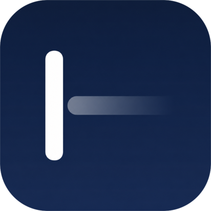
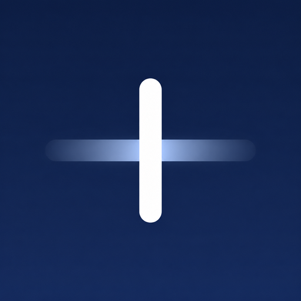
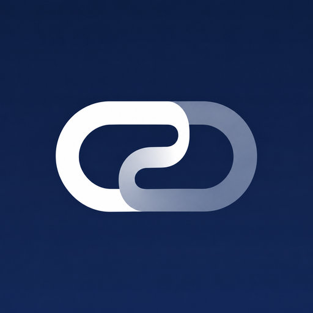
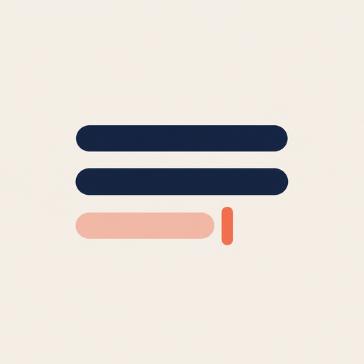

Itda logo, round 1
What should Itda's app icon be? John: "the current one is nice but not balanced enough."
Why A is off-balance: the solid caret holds nearly all the weight and sits at 22% from the left, while the bar that should balance it fades to nothing, so the mark leans left and the right third of the tile is empty. My pick: C, the caret on the centre line with typed text solid on the left and the suggestion ghosted on the right. It keeps A's idea (a caret and what comes next), it's symmetric so it can't lean, and it still reads at 16 px. B is the smallest change if you want A as it is, just re-weighted. E is the one with character: the caret is the ㅣ of 잇.
Drawn options (vector, ready to build)
AToday

The shipping icon. Caret 22% from the left, tail fading to nothing: the weight leans left and the right of the tile is empty.
Image ideas (Codex's image tool, today's icon as reference)
Images, not builds: each note says which idea is worth taking into a drawn version.
IBalanced cursor

A caret crossing a glowing ghost bar. Balanced, but it reads as a plus sign: not worth building.
JTwo strokes joining

잇다 as "to join": a solid stroke linking into a ghost one. The strongest new idea here, but it reads as the hyperlink icon; worth a drawn round only if it drops the chain shape.
KWarm text lines

Paper, ink lines, a coral ghost line and caret. Tidy but generic (a text-align icon); G already carries its colours.